<title>The Ides of March: Storyboard v1</title>
<meta name="claude:viewport-fit-sides" content="cover">
<link rel="preconnect" href="https://fonts.googleapis.com"><link rel="stylesheet" href="https://fonts.googleapis.com/css2?family=Anton&family=Oswald:wght@400;600&family=Source+Serif+4:ital,wght@0,400;1,400&display=swap">
<style>
/* Layout: a production light-table. Acts as bands, shots as a 3-up grid of sketch + notes. */
:root { --bg:#efe8da; --paper:#faf6ee; --ink:#2b1e16; --muted:#6f6152; --line:#d6cbb6; --accent:#b8321f; --gold:#a8761a;
  --display:'Anton','Oswald',Impact,sans-serif; --label:'Oswald','Arial Narrow',sans-serif; --body:'Source Serif 4',Georgia,serif; }
@media (prefers-color-scheme: dark) { :root:not([data-theme="light"]) { --bg:#17130f; --paper:#221c16; --ink:#efe6d6; --muted:#a89984; --line:#3a3128; --accent:#e0644c; --gold:#e3b04f; color-scheme:dark } }
:root[data-theme="dark"] { --bg:#17130f; --paper:#221c16; --ink:#efe6d6; --muted:#a89984; --line:#3a3128; --accent:#e0644c; --gold:#e3b04f; color-scheme:dark }
body { background:var(--bg); color:var(--ink); font-family:var(--body); font-size:15px; line-height:1.5; padding-left:max(16px, env(safe-area-inset-left,0px)); padding-right:max(16px, env(safe-area-inset-right,0px)); padding-block:0 64px }
.top { max-width:1320px; margin:0 auto; padding-block:40px 20px; display:grid; gap:14px }
.kicker { font-family:var(--label); letter-spacing:.14em; text-transform:uppercase; font-size:12px; color:var(--accent) }
h1 { font-family:var(--display); font-weight:400; font-size:clamp(40px,7vw,84px); line-height:.95; margin:0; text-wrap:balance; letter-spacing:.01em }
.meta { font-family:var(--label); color:var(--muted); font-size:14px; display:flex; flex-wrap:wrap; gap:6px 18px }
.rules { max-width:70ch; color:var(--muted); margin:0 }
nav { position:sticky; top:env(safe-area-inset-top,0px); z-index:5; background:var(--bg); border-bottom:1px solid var(--line); max-width:1320px; margin:0 auto; display:flex; gap:4px 16px; overflow-x:auto; padding-block:10px; font-family:var(--label); font-size:13px; white-space:nowrap }
body::before { content:""; position:fixed; inset:0 0 auto; height:env(safe-area-inset-top,0px); z-index:10; background:var(--bg) }
nav a { color:var(--muted); text-decoration:none } nav a:hover, nav a:focus-visible { color:var(--accent); outline:none; text-decoration:underline }
.act { max-width:1320px; margin:0 auto; padding-block:34px 8px }
.acthead { display:flex; flex-wrap:wrap; align-items:baseline; gap:6px 16px; border-bottom:2px solid var(--ink); padding-bottom:8px; margin-bottom:18px }
.actno { font-family:var(--label); text-transform:uppercase; letter-spacing:.14em; font-size:12px; color:var(--accent) }
h2 { font-family:var(--display); font-weight:400; font-size:34px; margin:0; letter-spacing:.02em }
.period { font-family:var(--label); color:var(--muted); font-size:13px; margin-left:auto }
.grid { display:grid; grid-template-columns:repeat(auto-fill,minmax(min(100%,380px),1fr)); gap:22px }
.shot { background:var(--paper); border:1px solid var(--line); display:flex; flex-direction:column; min-width:0 }
.frame { position:relative; aspect-ratio:16/9; max-width:100%; background:#d8d0c0 }
.frame img { display:block; width:100%; height:100% ; object-fit:cover }
.sid, .dur { position:absolute; top:8px; font-family:var(--label); font-weight:600; font-size:13px; padding:2px 8px; background:#2b1e16; color:#f7f1e4; font-variant-numeric:tabular-nums }
.sid { left:8px } .dur { right:8px; background:rgba(43,30,22,.75) }
.notes { padding:14px 16px 16px; display:grid; gap:10px; min-width:0 }
.vo { margin:0; font-style:italic; font-size:16px }
dl { margin:0; display:grid; grid-template-columns:max-content 1fr; gap:4px 12px; font-size:14px }
dt { font-family:var(--label); text-transform:uppercase; letter-spacing:.1em; font-size:11px; color:var(--muted); padding-top:3px }
dd { margin:0; min-width:0 }
.tags { display:flex; flex-wrap:wrap; gap:6px }
.tag { font-family:var(--label); font-size:12px; border:1px solid var(--gold); color:var(--gold); padding:1px 8px }
@media (prefers-reduced-motion: no-preference) { html { scroll-behavior:smooth } }
</style>
<header class="top">
  <span class="kicker">3D documentary · storyboard v1</span>
  <h1>The Ides of March: Storyboard v1</h1>
  <div class="meta"><span>91 shots</span><span>10 acts</span><span>≈ 11 min at script pace</span><span>Sketch frames from the 3D scenes; final renders are in colour</span></div>
  <p class="rules">Each panel is a sketch of the real 3D scene at about a third of the way through the shot, with the narration line, what is in frame, how the camera and characters move, and the sound. Violence is never shown: the raid uses silhouettes, flashes and cuts to black.</p>
</header>
<nav aria-label="Acts"><a href="#act0">0 · Cold Open</a><a href="#act1">1 · Too Powerful</a><a href="#act2">2 · The King Who Wasn&#x27;T</a><a href="#act3">3 · The Conspiracy</a><a href="#act4">4 · The Trap</a><a href="#act5">5 · The Ides Of March</a><a href="#act6">6 · The Warnings</a><a href="#act7">7 · The Mask</a></nav>
<section class="act" id="act0">
  <header class="acthead"><span class="actno">Act 0</span><h2>Cold Open</h2><span class="period">15 MARCH 44 BC · 0.9 min · 8 shots</span></header>
  <div class="grid"><article class="shot" id="s0-1">
  <div class="frame">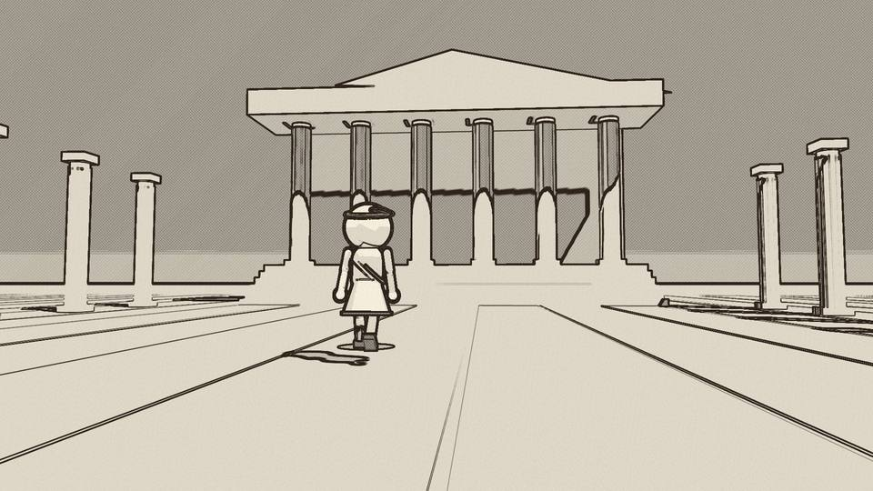<span class="sid">0.1</span><span class="dur">9.0s</span></div>
  <div class="notes">
    <p class="vo">“Rome, the fifteenth of March, 44 BC. The most powerful man in the world walks into a meeting of the Senate.”</p>
    <dl><dt>Frame</dt><dd>Caesar in a purple-bordered toga walks up marble steps into the Curia of Pompey, morning light</dd><dt>Motion</dt><dd>low angle tracking behind him up the steps</dd><dt>Sound</dt><dd>footsteps on marble, distant crowd</dd></dl>
    <div class="tags"><span class="tag">15 MARCH 44 BC</span></div>
  </div>
</article><article class="shot" id="s0-2">
  <div class="frame">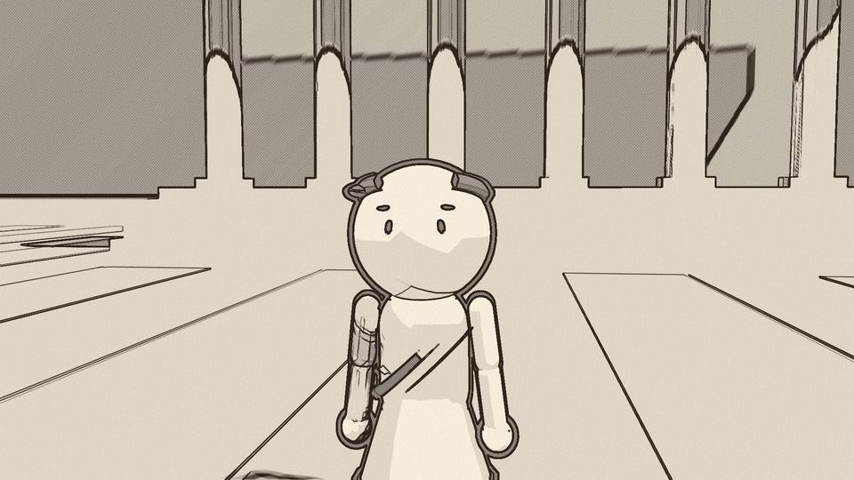<span class="sid">0.2</span><span class="dur">4.2s</span></div>
  <div class="notes">
    <p class="vo">“His name is Gaius Julius Caesar. Dictator for life.”</p>
    <dl><dt>Frame</dt><dd>Caesar&#x27;s face, calm brows, laurel wreath; name callout</dd><dt>Motion</dt><dd>slow push in</dd><dt>Sound</dt><dd>deep drum hit</dd></dl>
    <div class="tags"><span class="tag">callout: GAIUS JULIUS CAESAR / DICTATOR FOR LIFE</span></div>
  </div>
</article><article class="shot" id="s0-3">
  <div class="frame">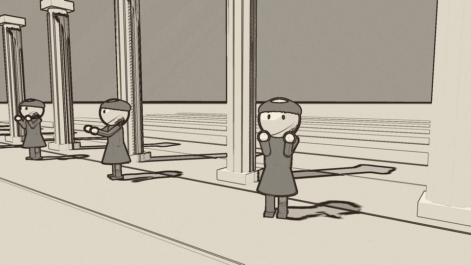<span class="sid">0.3</span><span class="dur">7.0s</span></div>
  <div class="notes">
    <p class="vo">“Outside the door, a group of gladiators waits in the courtyard, trying not to be noticed.”</p>
    <dl><dt>Frame</dt><dd>Gladiators loitering among columns, helmets under arms</dd><dt>Motion</dt><dd>lateral dolly along the colonnade</dd><dt>Sound</dt><dd>armour clinks, low murmur</dd></dl>
    
  </div>
</article><article class="shot" id="s0-4">
  <div class="frame">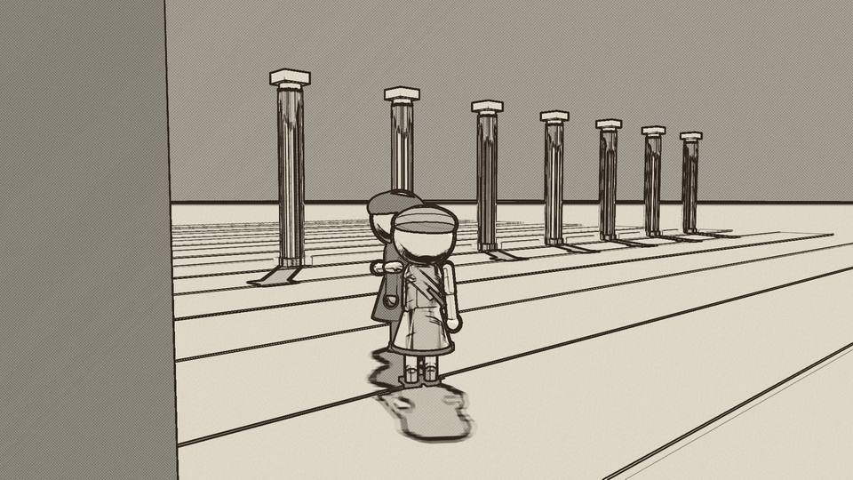<span class="sid">0.4</span><span class="dur">8.6s</span></div>
  <div class="notes">
    <p class="vo">“His closest ally, Mark Antony, should be at his side. But someone has stopped him at the door to talk.”</p>
    <dl><dt>Frame</dt><dd>Antony held in conversation outside by another senator, looking away from the door</dd><dt>Motion</dt><dd>over-the-shoulder from inside the doorway</dd><dt>Sound</dt><dd>chatter, door creak</dd></dl>
    
  </div>
</article><article class="shot" id="s0-5">
  <div class="frame">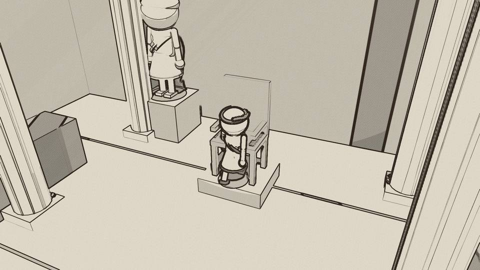<span class="sid">0.5</span><span class="dur">7.4s</span></div>
  <div class="notes">
    <p class="vo">“Caesar takes his seat on a golden chair at the front of the room. He is alone.”</p>
    <dl><dt>Frame</dt><dd>The golden chair, Caesar sits; the doors behind close</dd><dt>Motion</dt><dd>crane down to the chair</dd><dt>Sound</dt><dd>door thud, silence</dd></dl>
    
  </div>
</article><article class="shot" id="s0-6">
  <div class="frame">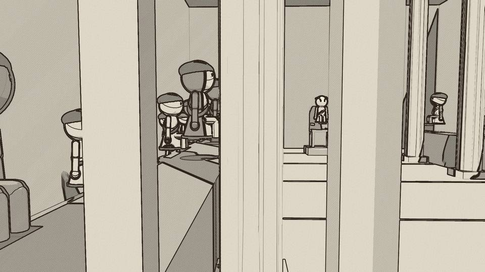<span class="sid">0.6</span><span class="dur">5.4s</span></div>
  <div class="notes">
    <p class="vo">“Across the room, one senator stands up and starts walking toward him.”</p>
    <dl><dt>Frame</dt><dd>A senator rises from the benches; dozens of eyes follow</dd><dt>Motion</dt><dd>slow push past the benches</dd><dt>Sound</dt><dd>bench creak, heartbeat</dd></dl>
    
  </div>
</article><article class="shot" id="s0-7">
  <div class="frame">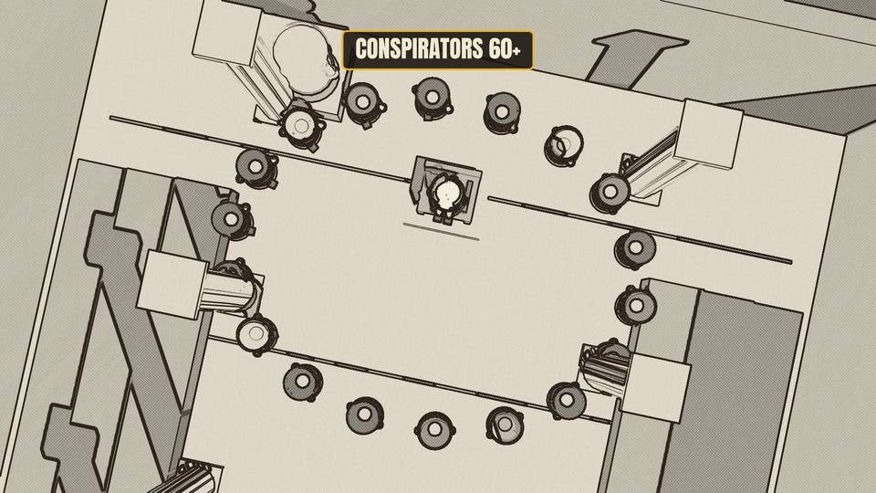<span class="sid">0.7</span><span class="dur">10.2s</span></div>
  <div class="notes">
    <p class="vo">“In the next few minutes, more than sixty men will try to save the Roman Republic. And in doing it, they will destroy it.”</p>
    <dl><dt>Frame</dt><dd>Ring of togas closing around the chair, seen from above</dd><dt>Motion</dt><dd>top-down slow rotation</dd><dt>Sound</dt><dd>rising drone</dd></dl>
    <div class="tags"><span class="tag">tally: CONSPIRATORS 60+</span></div>
  </div>
</article><article class="shot" id="s0-8">
  <div class="frame">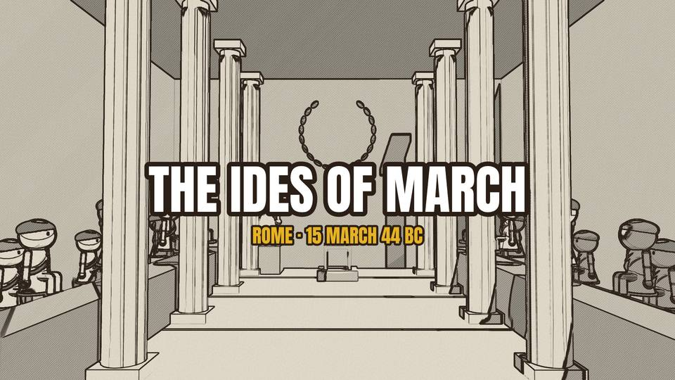<span class="sid">0.8</span><span class="dur">3.8s</span></div>
  <div class="notes">
    <p class="vo">“This is the most famous killing in history.”</p>
    <dl><dt>Frame</dt><dd>&quot;THE IDES OF MARCH&quot; title slams over the Senate hall, laurel emblem</dd><dt>Motion</dt><dd>title slam, then slow push</dd><dt>Sound</dt><dd>title slam, thunder</dd></dl>
    
  </div>
</article></div>
</section><section class="act" id="act1">
  <header class="acthead"><span class="actno">Act 1</span><h2>Too Powerful</h2><span class="period">100 TO 45 BC · 1.7 min · 13 shots</span></header>
  <div class="grid"><article class="shot" id="s1-1">
  <div class="frame">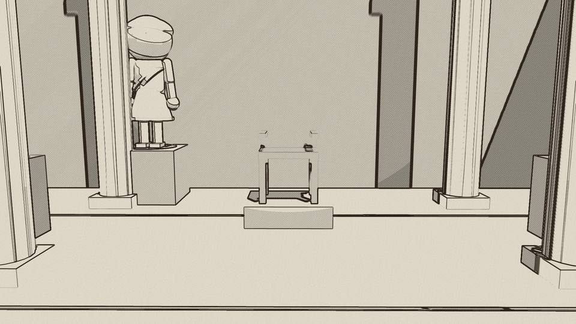<span class="sid">1.1</span><span class="dur">5.0s</span></div>
  <div class="notes">
    <p class="vo">“To understand how Caesar got here, we have to go back.”</p>
    <dl><dt>Frame</dt><dd>The golden chair fades to a young Caesar in a plain toga</dd><dt>Motion</dt><dd>slow dissolve push</dd><dt>Sound</dt><dd>paper swipe</dd></dl>
    
  </div>
</article><article class="shot" id="s1-2">
  <div class="frame">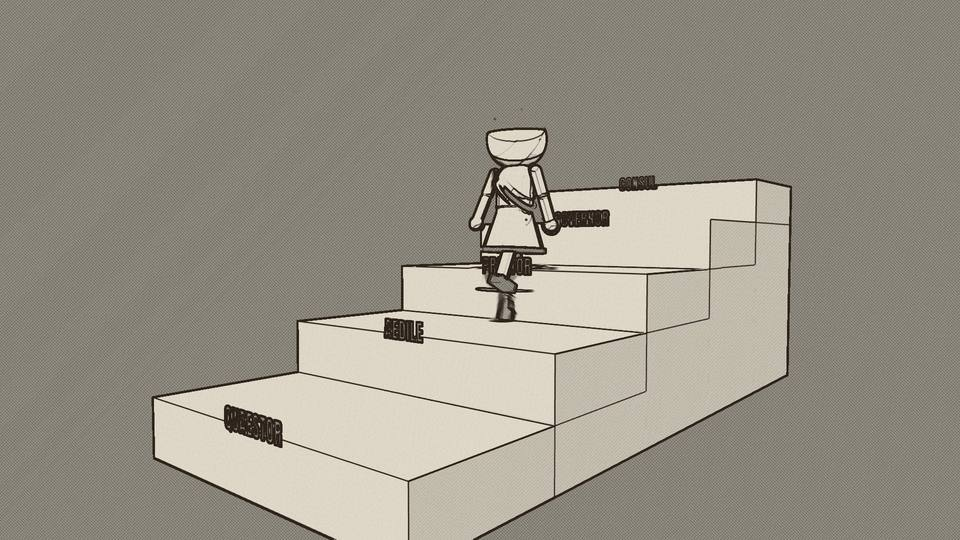<span class="sid">1.2</span><span class="dur">5.8s</span></div>
  <div class="notes">
    <p class="vo">“Over almost forty years in politics, Caesar climbed to Rome&#x27;s highest office. Consul.”</p>
    <dl><dt>Frame</dt><dd>Caesar climbing a staircase of office titles, &quot;CONSUL&quot; at the top</dd><dt>Motion</dt><dd>crane up the staircase</dd><dt>Sound</dt><dd>step thuds, ding</dd></dl>
    
  </div>
</article><article class="shot" id="s1-3">
  <div class="frame">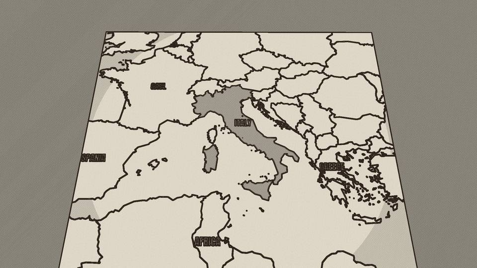<span class="sid">1.3</span><span class="dur">9.0s</span></div>
  <div class="notes">
    <p class="vo">“As a general, he conquered all of Gaul. Today that is France, Belgium and parts of Switzerland, Germany and the Netherlands.”</p>
    <dl><dt>Frame</dt><dd>Parchment map; Gaul floods Roman red, modern names in small labels</dd><dt>Motion</dt><dd>crane over Gaul as it fills</dd><dt>Sound</dt><dd>map flood whoosh, horn</dd></dl>
    <div class="tags"><span class="tag">tally: GAUL CONQUERED</span></div>
  </div>
</article><article class="shot" id="s1-4">
  <div class="frame">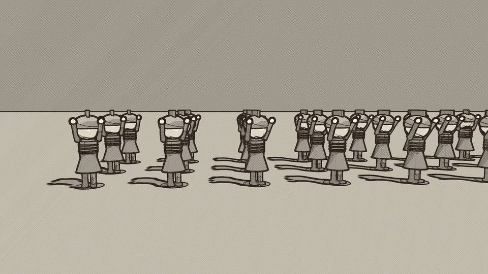<span class="sid">1.4</span><span class="dur">7.8s</span></div>
  <div class="notes">
    <p class="vo">“He was a military genius, and charming with it. His legions were loyal to him, and only him.”</p>
    <dl><dt>Frame</dt><dd>Rows of legionaries turning to salute Caesar, not the Senate standard</dd><dt>Motion</dt><dd>lateral dolly down the ranks</dd><dt>Sound</dt><dd>marching, salute clang</dd></dl>
    
  </div>
</article><article class="shot" id="s1-5">
  <div class="frame">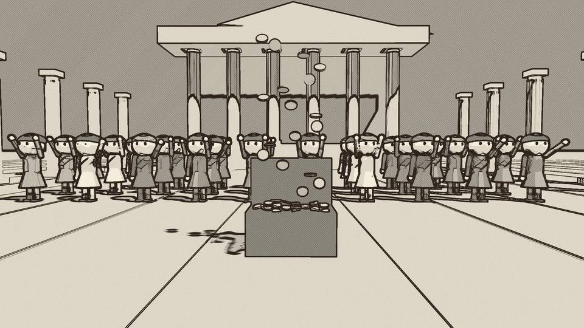<span class="sid">1.5</span><span class="dur">8.6s</span></div>
  <div class="notes">
    <p class="vo">“His wars made him enormously rich. And he spoke for ordinary Romans against the old elite. The people loved him.”</p>
    <dl><dt>Frame</dt><dd>Coins pour into a chest; crowd cheering in the Forum</dd><dt>Motion</dt><dd>push through the crowd</dd><dt>Sound</dt><dd>coins, cheering</dd></dl>
    
  </div>
</article><article class="shot" id="s1-6">
  <div class="frame">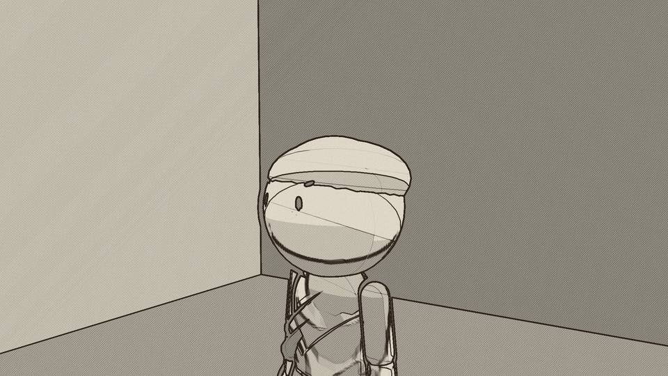<span class="sid">1.6</span><span class="dur">3.0s</span></div>
  <div class="notes">
    <p class="vo">“Maybe they loved him too much.”</p>
    <dl><dt>Frame</dt><dd>The cheering crowd seen from a Senate window, a stern senator watching</dd><dt>Motion</dt><dd>slow push on the senator&#x27;s frown</dd><dt>Sound</dt><dd>cheering muffled, low tone</dd></dl>
    
  </div>
</article><article class="shot" id="s1-7">
  <div class="frame">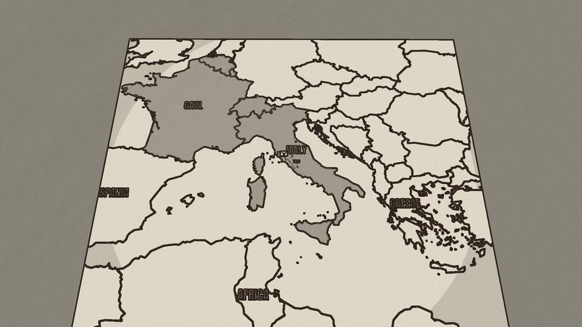<span class="sid">1.7</span><span class="dur">8.6s</span></div>
  <div class="notes">
    <p class="vo">“In 49 BC, the Senate and Caesar&#x27;s great rival, Pompey, order him to give up his army and come home.”</p>
    <dl><dt>Frame</dt><dd>Map: letter icon flies from Rome to Caesar in Gaul</dd><dt>Motion</dt><dd>follow the letter</dd><dt>Sound</dt><dd>paper whoosh</dd></dl>
    <div class="tags"><span class="tag">49 BC</span><span class="tag">callout: POMPEY THE GREAT / CAESAR&#x27;S RIVAL</span></div>
  </div>
</article><article class="shot" id="s1-8">
  <div class="frame">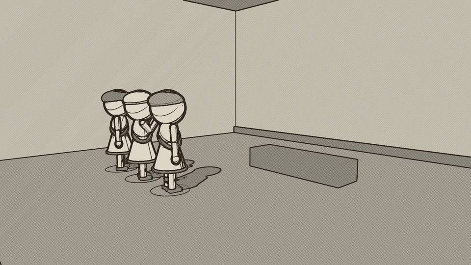<span class="sid">1.8</span><span class="dur">7.8s</span></div>
  <div class="notes">
    <p class="vo">“Without his command, he would lose his legal protection. His enemies were waiting to put him on trial.”</p>
    <dl><dt>Frame</dt><dd>Courtroom with empty defendant&#x27;s bench and waiting prosecutors</dd><dt>Motion</dt><dd>slow push on the empty bench</dd><dt>Sound</dt><dd>gavel tap</dd></dl>
    
  </div>
</article><article class="shot" id="s1-9">
  <div class="frame">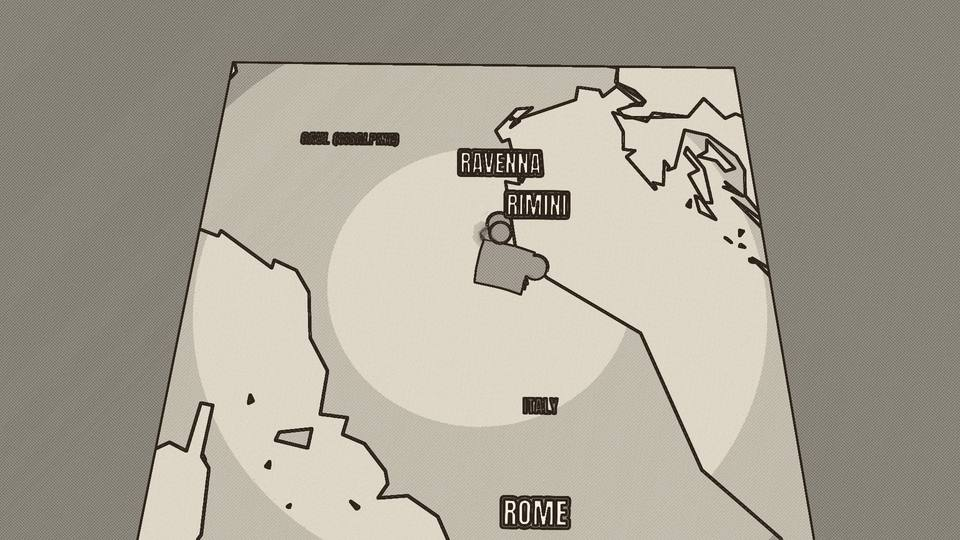<span class="sid">1.9</span><span class="dur">9.8s</span></div>
  <div class="notes">
    <p class="vo">“So Caesar does something no Roman general is allowed to do. He crosses the Rubicon river into Italy, with a legion behind him.”</p>
    <dl><dt>Frame</dt><dd>Map close on northern Italy; the Rubicon line; a legion icon steps across it</dd><dt>Motion</dt><dd>push in on the crossing</dd><dt>Sound</dt><dd>water splash, war horn</dd></dl>
    <div class="tags"><span class="tag">RUBICON · 49 BC</span></div>
  </div>
</article><article class="shot" id="s1-10">
  <div class="frame">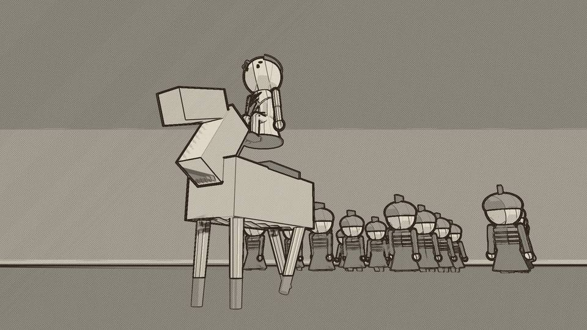<span class="sid">1.10</span><span class="dur">8.2s</span></div>
  <div class="notes">
    <p class="vo">“Roman law said generals had to leave their armies behind at that river. Crossing it with soldiers meant war.”</p>
    <dl><dt>Frame</dt><dd>Caesar on horseback in the shallow river, legion behind, mist</dd><dt>Motion</dt><dd>low angle from the water</dd><dt>Sound</dt><dd>horse hooves in water, drum</dd></dl>
    
  </div>
</article><article class="shot" id="s1-11">
  <div class="frame">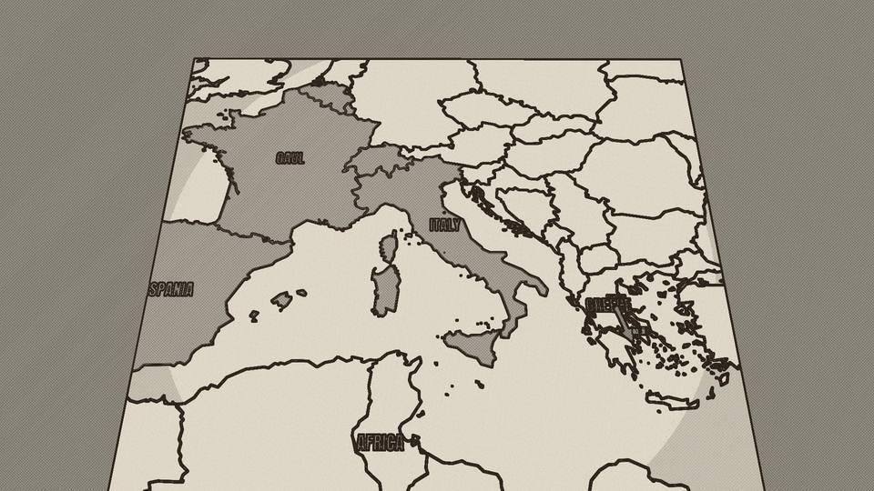<span class="sid">1.11</span><span class="dur">10.2s</span></div>
  <div class="notes">
    <p class="vo">“The civil war spreads across the whole Republic. In 48 BC, Caesar defeats Pompey in Greece. Pompey flees to Egypt and is killed there.”</p>
    <dl><dt>Frame</dt><dd>Map: battle icon at Pharsalus, Pompey&#x27;s ship to Egypt, a dark X</dd><dt>Motion</dt><dd>follow the arrows</dd><dt>Sound</dt><dd>battle horn, low boom</dd></dl>
    <div class="tags"><span class="tag">48 BC</span></div>
  </div>
</article><article class="shot" id="s1-12">
  <div class="frame">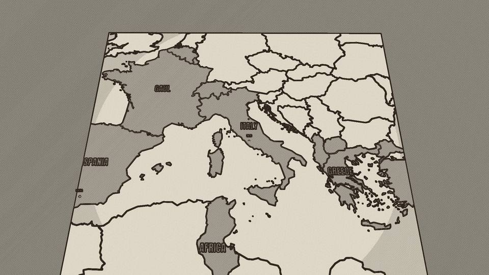<span class="sid">1.12</span><span class="dur">7.0s</span></div>
  <div class="notes">
    <p class="vo">“The last of Pompey&#x27;s armies is crushed in Spain in March 45 BC. Caesar has won.”</p>
    <dl><dt>Frame</dt><dd>Map: Munda in Spain flashes; the whole Republic turns Caesar red</dd><dt>Motion</dt><dd>crane back to show all of it</dd><dt>Sound</dt><dd>victory horn</dd></dl>
    <div class="tags"><span class="tag">45 BC</span></div>
  </div>
</article><article class="shot" id="s1-13">
  <div class="frame">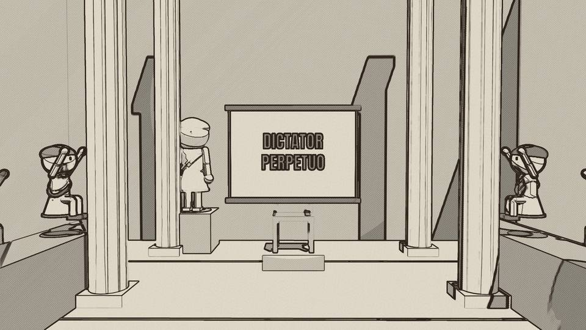<span class="sid">1.13</span><span class="dur">10.2s</span></div>
  <div class="notes">
    <p class="vo">“The Senate that once tried to stop him now gives him everything. Consul again and again. Then, in February 44 BC, dictator for life.”</p>
    <dl><dt>Frame</dt><dd>Senators raising hands; a scroll unrolls &quot;DICTATOR PERPETUO&quot;</dd><dt>Motion</dt><dd>push in on the scroll</dd><dt>Sound</dt><dd>scroll unroll, gavel</dd></dl>
    <div class="tags"><span class="tag">FEB 44 BC</span></div>
  </div>
</article></div>
</section><section class="act" id="act2">
  <header class="acthead"><span class="actno">Act 2</span><h2>The King Who Wasn&#x27;T</h2><span class="period">509 TO 44 BC · 0.9 min · 7 shots</span></header>
  <div class="grid"><article class="shot" id="s2-1">
  <div class="frame">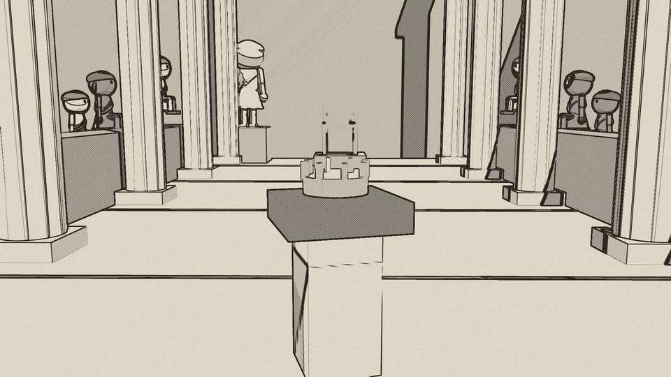<span class="sid">2.1</span><span class="dur">5.4s</span></div>
  <div class="notes">
    <p class="vo">“Meanwhile, one word frightens Rome&#x27;s old families more than any other. King.”</p>
    <dl><dt>Frame</dt><dd>A golden crown on a cushion, Senate hall in shadow behind</dd><dt>Motion</dt><dd>slow push on the crown</dd><dt>Sound</dt><dd>deep bell</dd></dl>
    
  </div>
</article><article class="shot" id="s2-2">
  <div class="frame">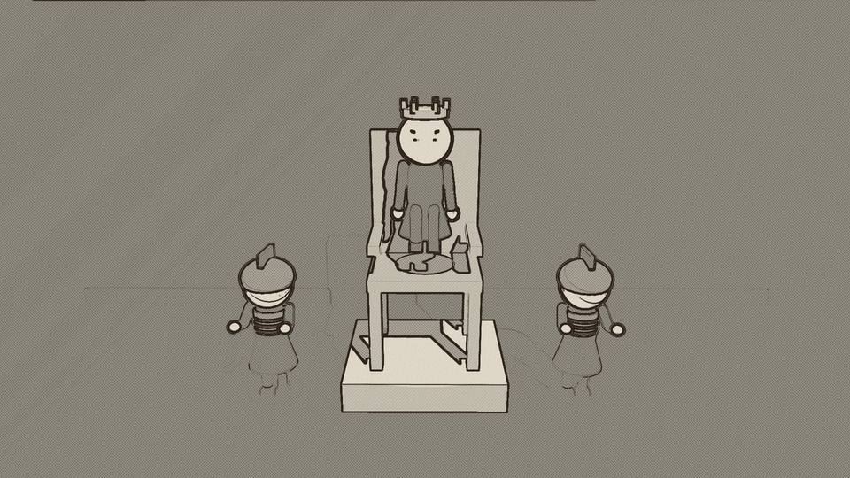<span class="sid">2.2</span><span class="dur">5.8s</span></div>
  <div class="notes">
    <p class="vo">“Rome had kings once. The last was Tarquin the Proud, a cruel tyrant.”</p>
    <dl><dt>Frame</dt><dd>Tarquin on a throne, stern brows, guards on either side</dd><dt>Motion</dt><dd>crane down on the throne</dd><dt>Sound</dt><dd>cold drone</dd></dl>
    <div class="tags"><span class="tag">callout: TARQUIN THE PROUD / LAST KING OF ROME</span></div>
  </div>
</article><article class="shot" id="s2-3">
  <div class="frame">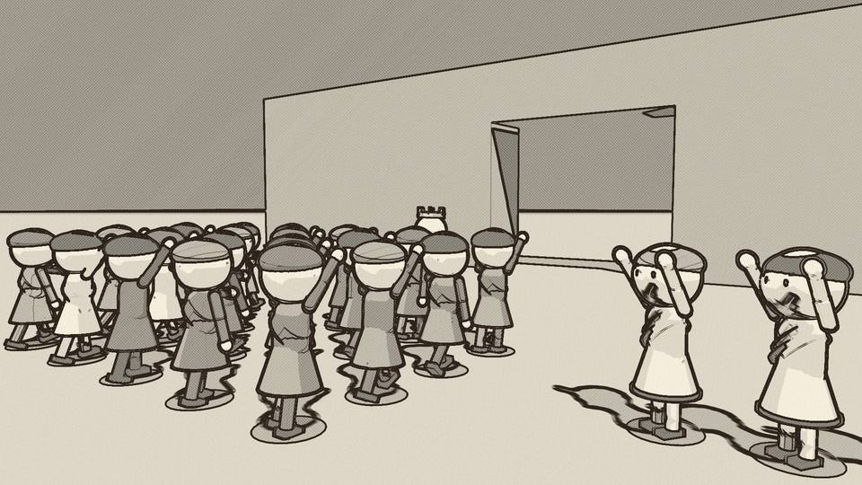<span class="sid">2.3</span><span class="dur">7.8s</span></div>
  <div class="notes">
    <p class="vo">“Around 509 BC, the Romans threw him out, and swore that no king would ever rule Rome again.”</p>
    <dl><dt>Frame</dt><dd>Crowd pushing Tarquin out of the city gate; senators raising hands in an oath</dd><dt>Motion</dt><dd>tracking the crowd</dd><dt>Sound</dt><dd>crowd roar, gate slam</dd></dl>
    <div class="tags"><span class="tag">509 BC</span></div>
  </div>
</article><article class="shot" id="s2-4">
  <div class="frame">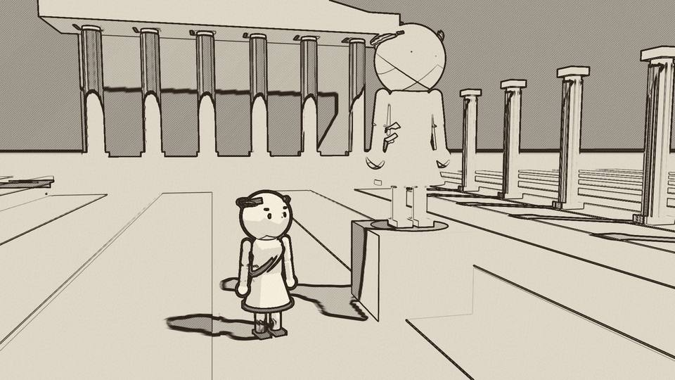<span class="sid">2.4</span><span class="dur">9.8s</span></div>
  <div class="notes">
    <p class="vo">“Now it looks as if Caesar wants to be one. He wears royal purple and puts up statues of himself around the city.”</p>
    <dl><dt>Frame</dt><dd>Caesar in a purple toga beside a new statue of himself</dd><dt>Motion</dt><dd>orbit the statue</dd><dt>Sound</dt><dd>stone thud, chisel taps</dd></dl>
    
  </div>
</article><article class="shot" id="s2-5">
  <div class="frame">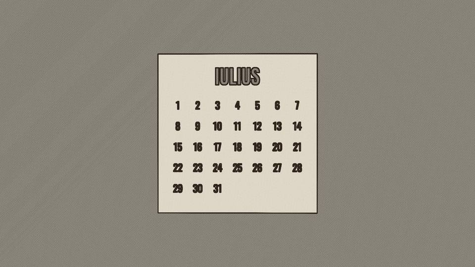<span class="sid">2.5</span><span class="dur">7.4s</span></div>
  <div class="notes">
    <p class="vo">“His allies rename the month of his birth, Quintilis, after him. Julius. We still call it July.”</p>
    <dl><dt>Frame</dt><dd>Calendar page flips from QUINTILIS to IULIUS to JULY</dd><dt>Motion</dt><dd>calendar flip</dd><dt>Sound</dt><dd>page flips, ding</dd></dl>
    
  </div>
</article><article class="shot" id="s2-6">
  <div class="frame">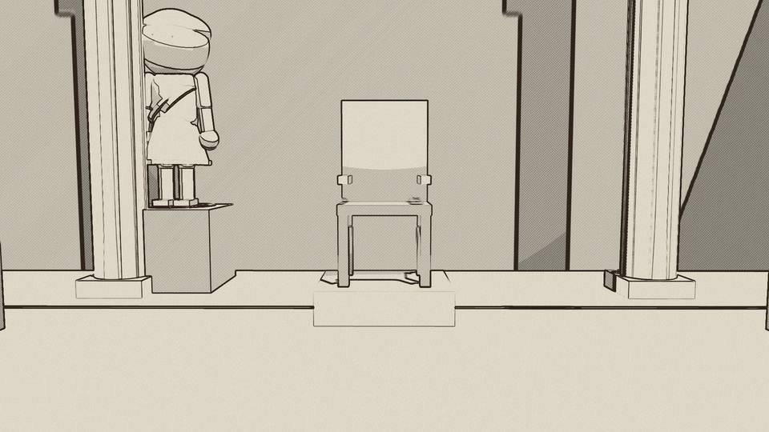<span class="sid">2.6</span><span class="dur">8.6s</span></div>
  <div class="notes">
    <p class="vo">“He even has a golden chair made for him in the Senate. The same chair he is sitting on today.”</p>
    <dl><dt>Frame</dt><dd>The golden chair gleams; the camera links it to Act 0&#x27;s chair</dd><dt>Motion</dt><dd>slow push</dd><dt>Sound</dt><dd>shimmer chime</dd></dl>
    
  </div>
</article><article class="shot" id="s2-7">
  <div class="frame">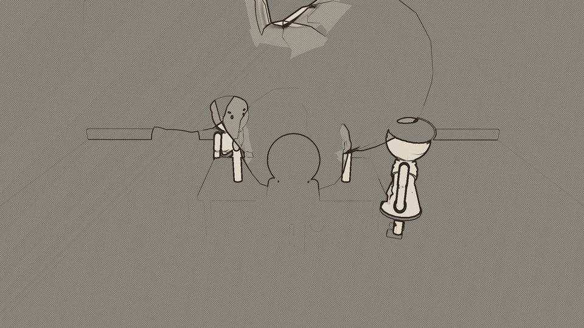<span class="sid">2.7</span><span class="dur">10.6s</span></div>
  <div class="notes">
    <p class="vo">“For his enemies, Caesar is a threat to the Republic itself. They cannot beat him in battle. So they will have to find another way.”</p>
    <dl><dt>Frame</dt><dd>Shadowy figures in togas meeting by candlelight</dd><dt>Motion</dt><dd>slow push through the candle smoke</dd><dt>Sound</dt><dd>candle flicker, whisper</dd></dl>
    
  </div>
</article></div>
</section><section class="act" id="act3">
  <header class="acthead"><span class="actno">Act 3</span><h2>The Conspiracy</h2><span class="period">EARLY 44 BC · 1.7 min · 15 shots</span></header>
  <div class="grid"><article class="shot" id="s3-1">
  <div class="frame">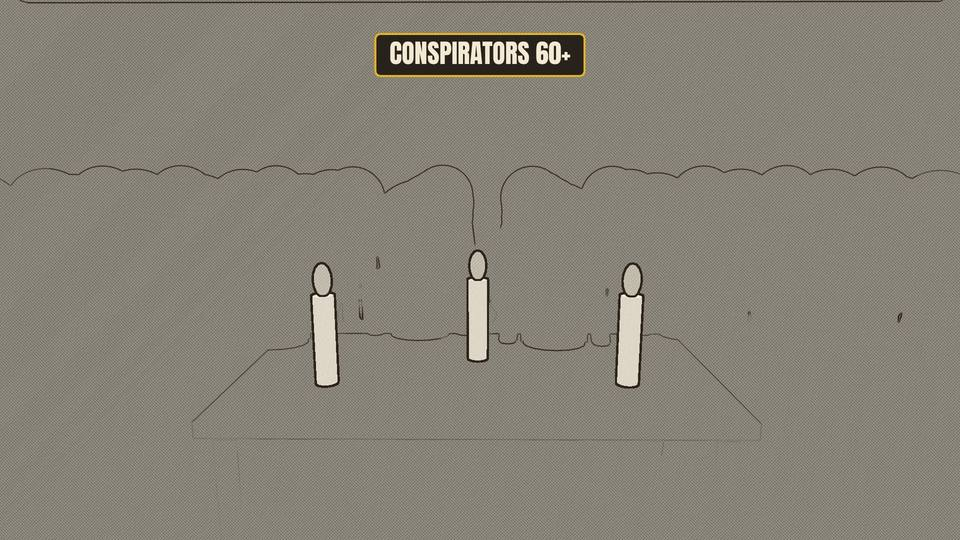<span class="sid">3.1</span><span class="dur">5.4s</span></div>
  <div class="notes">
    <p class="vo">“About sixty men join the plot. They come from very different places.”</p>
    <dl><dt>Frame</dt><dd>Sixty silhouettes in togas fill a dark hall</dd><dt>Motion</dt><dd>crane up and back</dd><dt>Sound</dt><dd>murmur, footsteps</dd></dl>
    <div class="tags"><span class="tag">tally: CONSPIRATORS 60+</span></div>
  </div>
</article><article class="shot" id="s3-2">
  <div class="frame">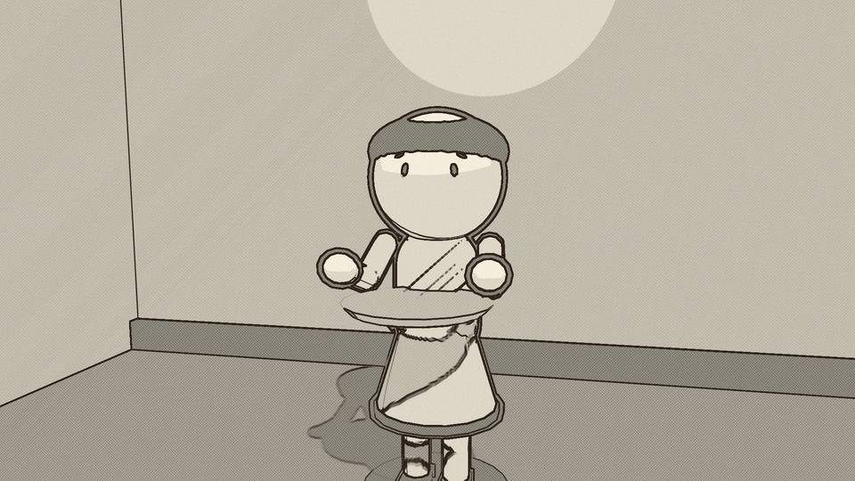<span class="sid">3.2</span><span class="dur">5.0s</span></div>
  <div class="notes">
    <p class="vo">“Some are old allies who feel Caesar never rewarded them enough.”</p>
    <dl><dt>Frame</dt><dd>Senator with an empty reward plate</dd><dt>Motion</dt><dd>push in</dd><dt>Sound</dt><dd>plate clink</dd></dl>
    
  </div>
</article><article class="shot" id="s3-3">
  <div class="frame">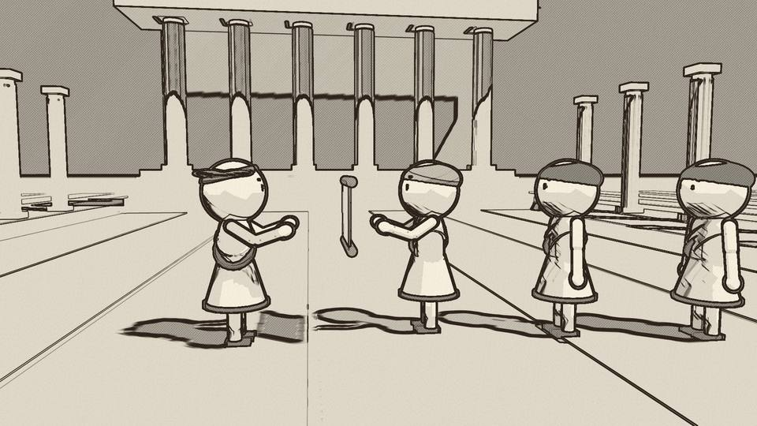<span class="sid">3.3</span><span class="dur">5.4s</span></div>
  <div class="notes">
    <p class="vo">“Some fought against him for Pompey, and were pardoned by Caesar himself.”</p>
    <dl><dt>Frame</dt><dd>Former enemies receiving a pardon scroll from Caesar; red ink stamp &quot;PARDONED&quot;</dd><dt>Motion</dt><dd>lateral dolly</dd><dt>Sound</dt><dd>stamp</dd></dl>
    
  </div>
</article><article class="shot" id="s3-4">
  <div class="frame">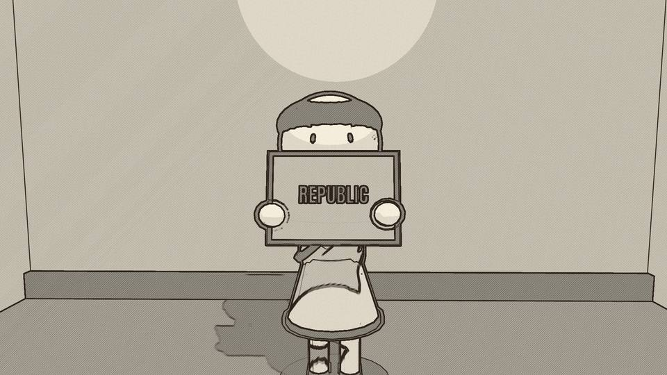<span class="sid">3.4</span><span class="dur">5.4s</span></div>
  <div class="notes">
    <p class="vo">“A few simply believe in the Republic, and see a king coming.”</p>
    <dl><dt>Frame</dt><dd>A senator with a wax tablet reading &quot;REPUBLIC&quot;</dd><dt>Motion</dt><dd>slow push</dd><dt>Sound</dt><dd>stylus scratch</dd></dl>
    
  </div>
</article><article class="shot" id="s3-5">
  <div class="frame">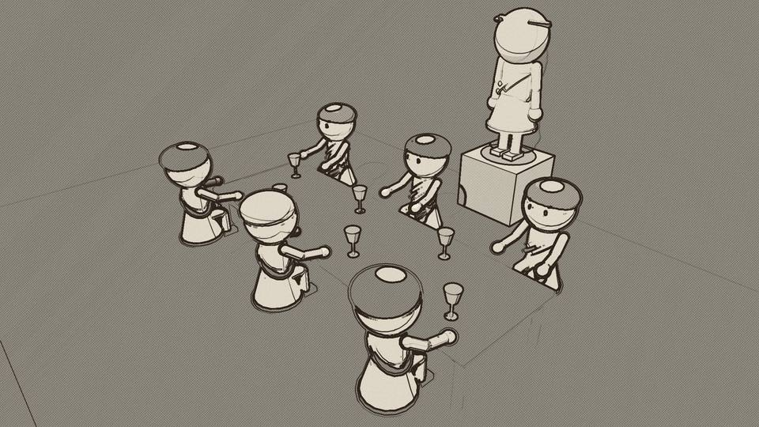<span class="sid">3.5</span><span class="dur">9.0s</span></div>
  <div class="notes">
    <p class="vo">“And most belong to the old aristocracy, who run the Senate and do not want to share power with one man.”</p>
    <dl><dt>Frame</dt><dd>Rich senators at a banquet table, frowning at Caesar&#x27;s statue</dd><dt>Motion</dt><dd>crane over the table</dd><dt>Sound</dt><dd>goblets clink</dd></dl>
    
  </div>
</article><article class="shot" id="s3-6">
  <div class="frame">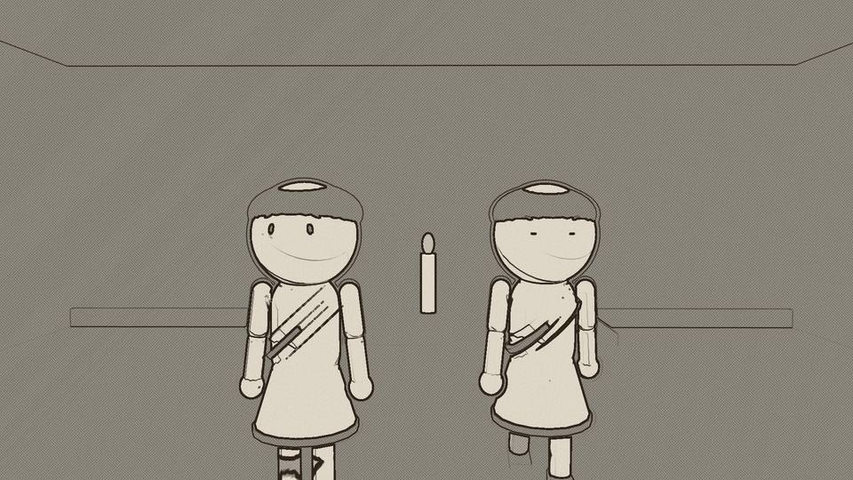<span class="sid">3.6</span><span class="dur">3.8s</span></div>
  <div class="notes">
    <p class="vo">“Their leaders include Marcus Brutus and Gaius Cassius.”</p>
    <dl><dt>Frame</dt><dd>Two figures step forward; name callouts</dd><dt>Motion</dt><dd>push in on both</dd><dt>Sound</dt><dd>drum hit</dd></dl>
    <div class="tags"><span class="tag">callout: MARCUS BRUTUS · GAIUS CASSIUS / LEADING CONSPIRATORS</span></div>
  </div>
</article><article class="shot" id="s3-7">
  <div class="frame">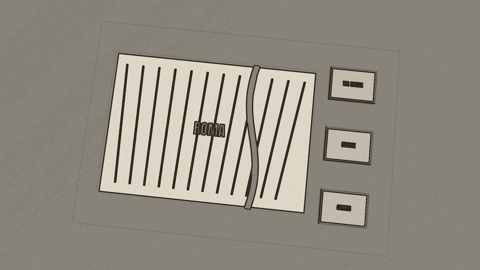<span class="sid">3.7</span><span class="dur">6.6s</span></div>
  <div class="notes">
    <p class="vo">“For months they meet in secret. And they look at different ways to do it.”</p>
    <dl><dt>Frame</dt><dd>A table with a city map and three wax tablets</dd><dt>Motion</dt><dd>top-down push</dd><dt>Sound</dt><dd>tablet clacks</dd></dl>
    
  </div>
</article><article class="shot" id="s3-8">
  <div class="frame">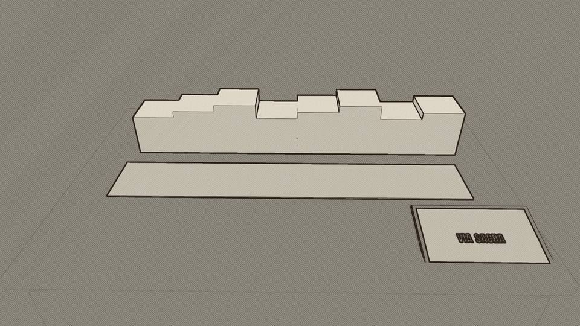<span class="sid">3.8</span><span class="dur">7.8s</span></div>
  <div class="notes">
    <p class="vo">“Plan one. Attack him in the street, on the Via Sacra. Too public. His friends might be nearby.”</p>
    <dl><dt>Frame</dt><dd>Street scene on the Via Sacra, a red X stamps the tablet</dd><dt>Motion</dt><dd>push in, X stamp</dd><dt>Sound</dt><dd>crowd noise, X stamp</dd></dl>
    
  </div>
</article><article class="shot" id="s3-9">
  <div class="frame">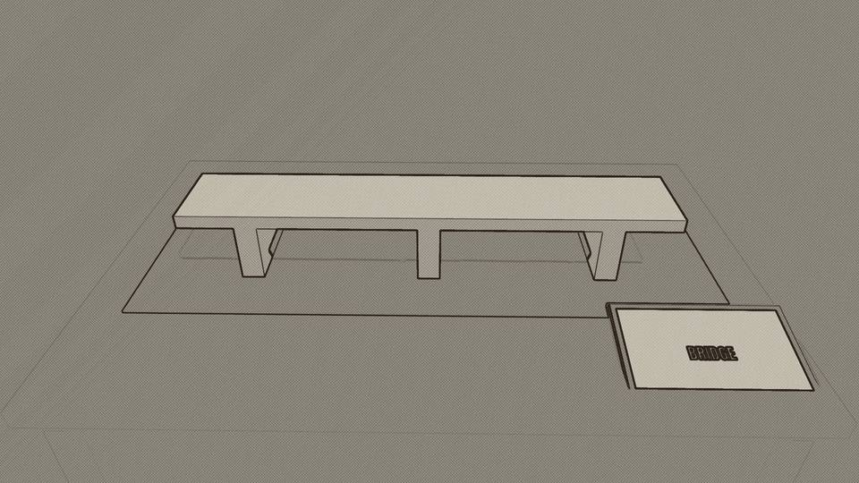<span class="sid">3.9</span><span class="dur">5.8s</span></div>
  <div class="notes">
    <p class="vo">“Plan two. Throw him off a bridge, with armed men waiting below. Ambitious.”</p>
    <dl><dt>Frame</dt><dd>Tiny bridge model with tiny men underneath, a red X stamps it</dd><dt>Motion</dt><dd>top-down, X stamp</dd><dt>Sound</dt><dd>water splash, X stamp</dd></dl>
    
  </div>
</article><article class="shot" id="s3-10">
  <div class="frame">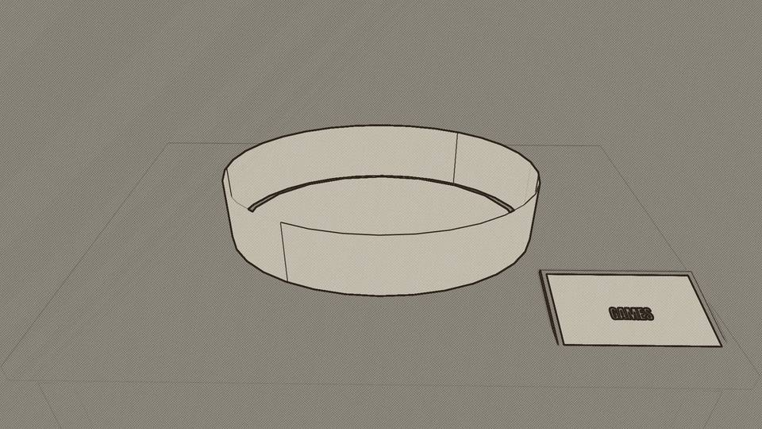<span class="sid">3.10</span><span class="dur">5.0s</span></div>
  <div class="notes">
    <p class="vo">“Plan three. Hide among the gladiators at a show. Also rejected.”</p>
    <dl><dt>Frame</dt><dd>Arena model, red X stamps it</dd><dt>Motion</dt><dd>push in, X stamp</dd><dt>Sound</dt><dd>crowd roar, X stamp</dd></dl>
    
  </div>
</article><article class="shot" id="s3-11">
  <div class="frame">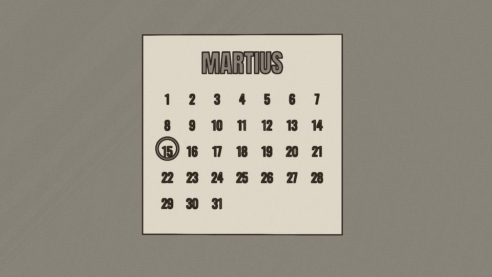<span class="sid">3.11</span><span class="dur">7.4s</span></div>
  <div class="notes">
    <p class="vo">“In the end they choose a meeting of the Senate on the fifteenth of March, the Ides.”</p>
    <dl><dt>Frame</dt><dd>Calendar with the 15th circled in red</dd><dt>Motion</dt><dd>push in on the circle</dd><dt>Sound</dt><dd>quill scratch</dd></dl>
    <div class="tags"><span class="tag">IDES OF MARCH</span></div>
  </div>
</article><article class="shot" id="s3-12">
  <div class="frame">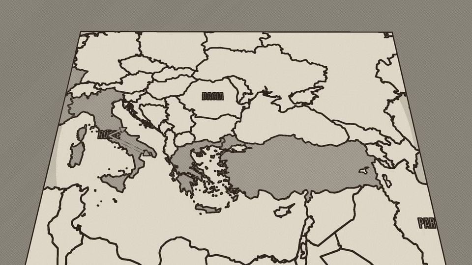<span class="sid">3.12</span><span class="dur">9.0s</span></div>
  <div class="notes">
    <p class="vo">“Three days later, Caesar is leaving Rome on a huge new war in the east, against the Dacians and the Parthians.”</p>
    <dl><dt>Frame</dt><dd>Map: arrows from Rome toward Dacia and Parthia</dd><dt>Motion</dt><dd>follow the arrows east</dd><dt>Sound</dt><dd>war horn</dd></dl>
    
  </div>
</article><article class="shot" id="s3-13">
  <div class="frame">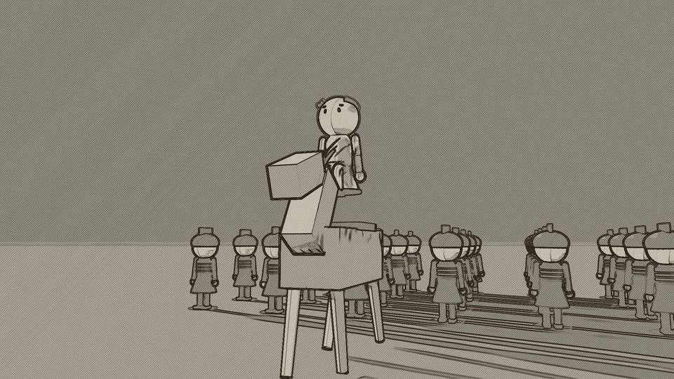<span class="sid">3.13</span><span class="dur">8.6s</span></div>
  <div class="notes">
    <p class="vo">“Once he leaves, he will be out of reach for years, and he will come back with even more glory.”</p>
    <dl><dt>Frame</dt><dd>Caesar on horseback at the head of an army, sun behind</dd><dt>Motion</dt><dd>slow push</dd><dt>Sound</dt><dd>marching</dd></dl>
    
  </div>
</article><article class="shot" id="s3-14">
  <div class="frame">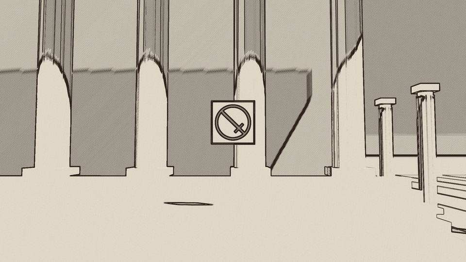<span class="sid">3.14</span><span class="dur">7.8s</span></div>
  <div class="notes">
    <p class="vo">“A Senate meeting is perfect. Weapons are not allowed inside, so no one will be armed. Except them.”</p>
    <dl><dt>Frame</dt><dd>Senate doorway with a sign of a crossed-out sword</dd><dt>Motion</dt><dd>push in on the sign</dd><dt>Sound</dt><dd>stone thud</dd></dl>
    
  </div>
</article><article class="shot" id="s3-15">
  <div class="frame">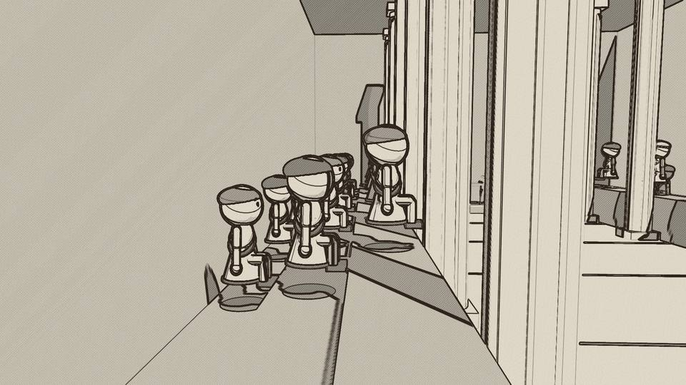<span class="sid">3.15</span><span class="dur">7.4s</span></div>
  <div class="notes">
    <p class="vo">“Most senators are loyal to Caesar. But few will jump in front of a blade for him.”</p>
    <dl><dt>Frame</dt><dd>Rows of senators looking nervous, glancing at each other</dd><dt>Motion</dt><dd>lateral dolly along the benches</dd><dt>Sound</dt><dd>nervous murmur</dd></dl>
    
  </div>
</article></div>
</section><section class="act" id="act4">
  <header class="acthead"><span class="actno">Act 4</span><h2>The Trap</h2><span class="period">15 MARCH 44 BC · 1.1 min · 10 shots</span></header>
  <div class="grid"><article class="shot" id="s4-1">
  <div class="frame">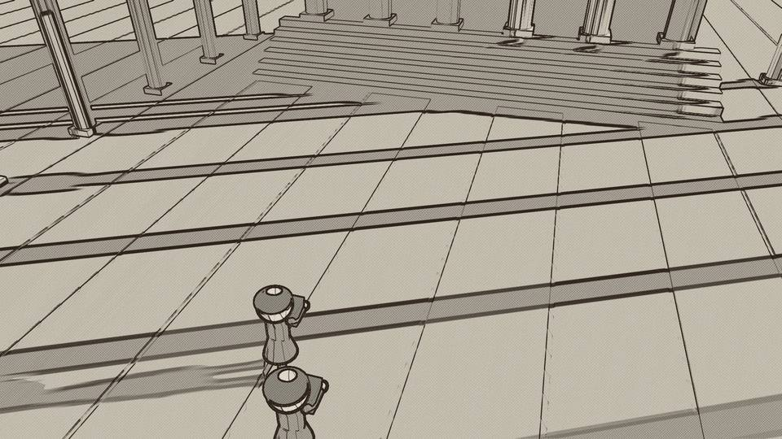<span class="sid">4.1</span><span class="dur">6.2s</span></div>
  <div class="notes">
    <p class="vo">“On the morning of the fifteenth, daggers are carried into the Curia of Pompey.”</p>
    <dl><dt>Frame</dt><dd>Morning at the Curia, servants carry wooden boxes</dd><dt>Motion</dt><dd>crane down to the doorway</dd><dt>Sound</dt><dd>footsteps, birds</dd></dl>
    <div class="tags"><span class="tag">15 MARCH · MORNING</span></div>
  </div>
</article><article class="shot" id="s4-2">
  <div class="frame">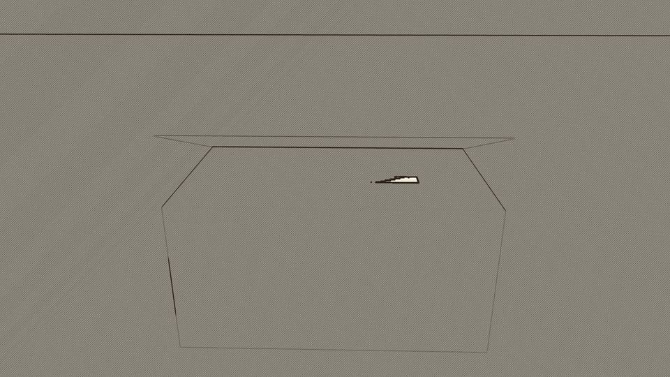<span class="sid">4.2</span><span class="dur">5.8s</span></div>
  <div class="notes">
    <p class="vo">“They are hidden in the wooden boxes normally used to carry writing tablets.”</p>
    <dl><dt>Frame</dt><dd>Box lid opens a crack, a glint inside; lid closes</dd><dt>Motion</dt><dd>close push</dd><dt>Sound</dt><dd>box creak, metal glint ding</dd></dl>
    
  </div>
</article><article class="shot" id="s4-3">
  <div class="frame">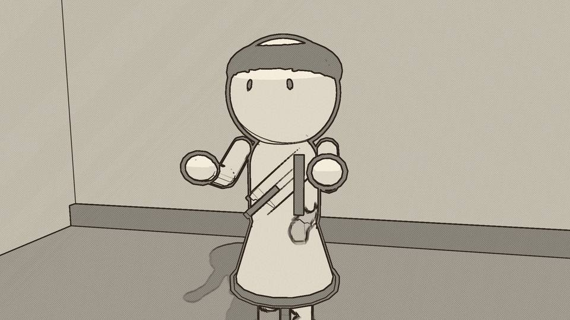<span class="sid">4.3</span><span class="dur">5.0s</span></div>
  <div class="notes">
    <p class="vo">“The conspirators take them out and hide them under their togas.”</p>
    <dl><dt>Frame</dt><dd>A senator adjusts his toga, a dagger shape vanishes beneath the fold</dd><dt>Motion</dt><dd>slow push</dd><dt>Sound</dt><dd>cloth rustle</dd></dl>
    
  </div>
</article><article class="shot" id="s4-4">
  <div class="frame">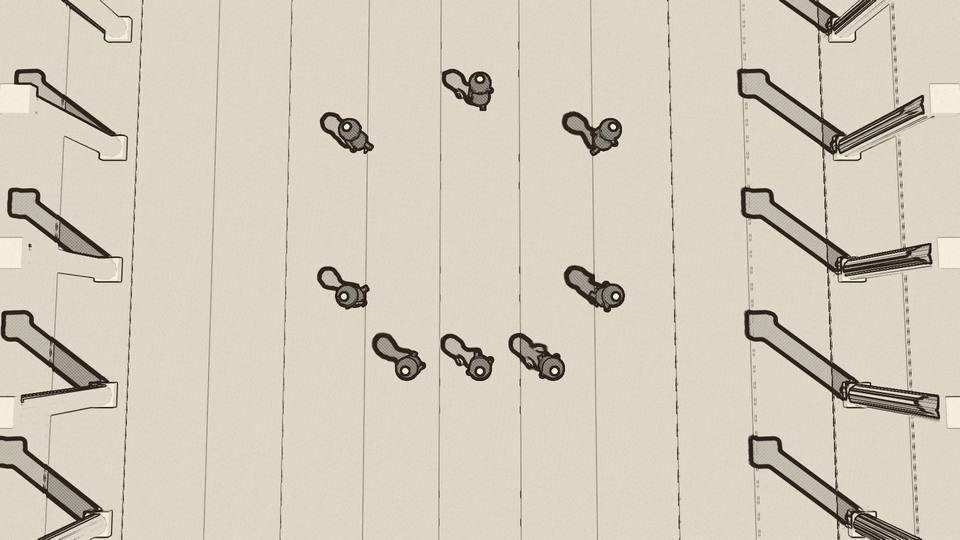<span class="sid">4.4</span><span class="dur">7.0s</span></div>
  <div class="notes">
    <p class="vo">“Outside, the gladiators take their places by the exits. If Caesar runs, he won&#x27;t get far.”</p>
    <dl><dt>Frame</dt><dd>Gladiators spread to the courtyard exits, top-down plan view</dd><dt>Motion</dt><dd>top-down crane</dd><dt>Sound</dt><dd>armour clinks</dd></dl>
    
  </div>
</article><article class="shot" id="s4-5">
  <div class="frame">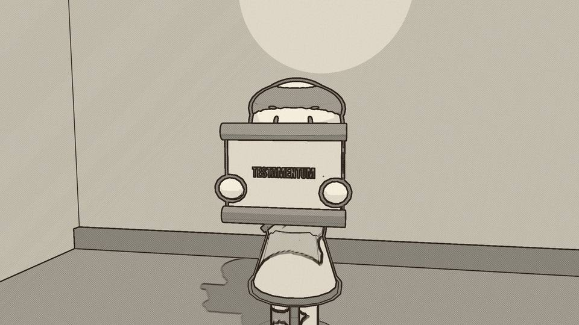<span class="sid">4.5</span><span class="dur">7.8s</span></div>
  <div class="notes">
    <p class="vo">“The gladiators belong to Decimus Brutus, one of Caesar&#x27;s closest friends. A man named in Caesar&#x27;s own will.”</p>
    <dl><dt>Frame</dt><dd>Decimus Brutus with the will scroll; name callout</dd><dt>Motion</dt><dd>push in on the scroll</dd><dt>Sound</dt><dd>scroll unroll</dd></dl>
    <div class="tags"><span class="tag">callout: DECIMUS BRUTUS / CAESAR&#x27;S FRIEND</span></div>
  </div>
</article><article class="shot" id="s4-6">
  <div class="frame">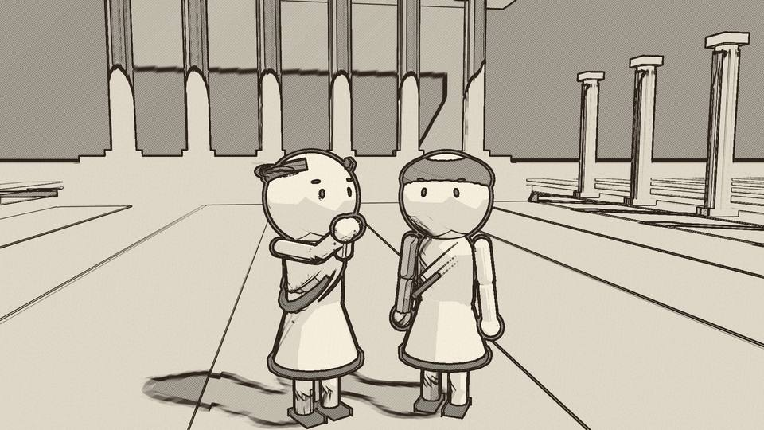<span class="sid">4.6</span><span class="dur">5.8s</span></div>
  <div class="notes">
    <p class="vo">“Caesar trusts him completely. He would never question why Decimus&#x27;s gladiators are there.”</p>
    <dl><dt>Frame</dt><dd>Caesar and Decimus laughing together, Caesar&#x27;s hand on his shoulder</dd><dt>Motion</dt><dd>slow orbit</dd><dt>Sound</dt><dd>soft laugh, low tone</dd></dl>
    
  </div>
</article><article class="shot" id="s4-7">
  <div class="frame">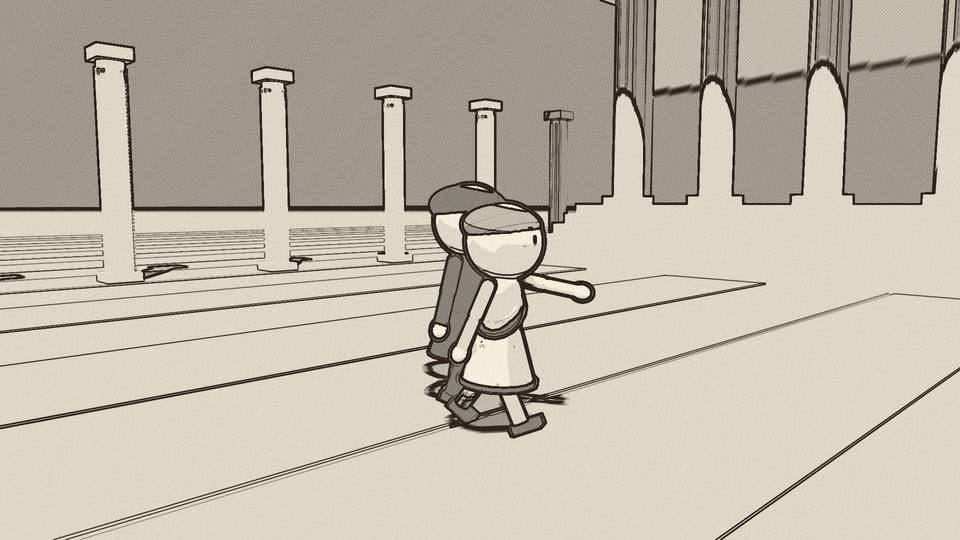<span class="sid">4.7</span><span class="dur">7.8s</span></div>
  <div class="notes">
    <p class="vo">“And when Caesar arrives with Mark Antony, a senator named Gaius Trebonius takes Antony aside for a chat.”</p>
    <dl><dt>Frame</dt><dd>Trebonius steering Antony away from the door</dd><dt>Motion</dt><dd>tracking the two</dd><dt>Sound</dt><dd>chatter</dd></dl>
    <div class="tags"><span class="tag">callout: GAIUS TREBONIUS / CONSPIRATOR</span></div>
  </div>
</article><article class="shot" id="s4-8">
  <div class="frame"><span class="sid">4.8</span><span class="dur">7.0s</span></div>
  <div class="notes">
    <p class="vo">“Antony is big, strong, and completely loyal. The plotters made sure he would not be inside.”</p>
    <dl><dt>Frame</dt><dd>Antony&#x27;s broad shoulders in frame as the doors close behind him</dd><dt>Motion</dt><dd>push in on the closing doors</dd><dt>Sound</dt><dd>door thud</dd></dl>
    
  </div>
</article><article class="shot" id="s4-9">
  <div class="frame"><span class="sid">4.9</span><span class="dur">9.8s</span></div>
  <div class="notes">
    <p class="vo">“They had thought about killing Antony too. They decided against it. Killing Caesar alone would look like punishing a tyrant, not a massacre.”</p>
    <dl><dt>Frame</dt><dd>Two scales: one figure vs two figures; the single figure stays</dd><dt>Motion</dt><dd>scale animation</dd><dt>Sound</dt><dd>scale creak</dd></dl>
    
  </div>
</article><article class="shot" id="s4-10">
  <div class="frame"><span class="sid">4.10</span><span class="dur">5.0s</span></div>
  <div class="notes">
    <p class="vo">“The stage is set. All they need now is a signal.”</p>
    <dl><dt>Frame</dt><dd>Wide shot of the hall, Caesar on his chair, sixty togas still</dd><dt>Motion</dt><dd>slow crane up</dd><dt>Sound</dt><dd>silence, heartbeat</dd></dl>
    
  </div>
</article></div>
</section><section class="act" id="act5">
  <header class="acthead"><span class="actno">Act 5</span><h2>The Ides Of March</h2><span class="period">15 MARCH 44 BC · 1.6 min · 13 shots</span></header>
  <div class="grid"><article class="shot" id="s5-1">
  <div class="frame"><span class="sid">5.1</span><span class="dur">9.8s</span></div>
  <div class="notes">
    <p class="vo">“The signal is a senator called Tillius Cimber. He walks up to Caesar and begs him to bring his brother home from exile.”</p>
    <dl><dt>Frame</dt><dd>Cimber kneels before the chair, hands raised</dd><dt>Motion</dt><dd>slow push from behind Cimber</dd><dt>Sound</dt><dd>footsteps, pleading murmur</dd></dl>
    <div class="tags"><span class="tag">callout: TILLIUS CIMBER / CONSPIRATOR</span></div>
  </div>
</article><article class="shot" id="s5-2">
  <div class="frame"><span class="sid">5.2</span><span class="dur">6.2s</span></div>
  <div class="notes">
    <p class="vo">“Dozens of senators stand up and crowd around, all pleading for the same thing.”</p>
    <dl><dt>Frame</dt><dd>Togas rise from the benches and close in like a tide</dd><dt>Motion</dt><dd>top-down rotation as the ring tightens</dd><dt>Sound</dt><dd>rising crowd voices</dd></dl>
    
  </div>
</article><article class="shot" id="s5-3">
  <div class="frame"><span class="sid">5.3</span><span class="dur">5.4s</span></div>
  <div class="notes">
    <p class="vo">“Then Cimber grabs Caesar&#x27;s toga and pulls it down off his shoulders.”</p>
    <dl><dt>Frame</dt><dd>Cimber grabs the toga; Caesar&#x27;s surprised brows</dd><dt>Motion</dt><dd>close push</dd><dt>Sound</dt><dd>cloth tear</dd></dl>
    
  </div>
</article><article class="shot" id="s5-4">
  <div class="frame"><span class="sid">5.4</span><span class="dur">3.4s</span></div>
  <div class="notes">
    <p class="vo">“Caesar shouts in shock. This is violence.”</p>
    <dl><dt>Frame</dt><dd>Caesar half-standing, mouth open</dd><dt>Motion</dt><dd>quick push in</dd><dt>Sound</dt><dd>shout echo</dd></dl>
    
  </div>
</article><article class="shot" id="s5-5">
  <div class="frame"><span class="sid">5.5</span><span class="dur">5.8s</span></div>
  <div class="notes">
    <p class="vo">“Behind him, a senator named Casca strikes first. The blow only grazes him.”</p>
    <dl><dt>Frame</dt><dd>Casca&#x27;s silhouette behind the chair, a dark shape; cut to black on the strike</dd><dt>Motion</dt><dd>cut to black</dd><dt>Sound</dt><dd>one sharp sting, silence</dd></dl>
    <div class="tags"><span class="tag">callout: PUBLIUS CASCA / FIRST BLOW</span></div>
  </div>
</article><article class="shot" id="s5-6">
  <div class="frame"><span class="sid">5.6</span><span class="dur">11.8s</span></div>
  <div class="notes">
    <p class="vo">“Caesar spins around and, according to one ancient writer, stabs Casca in the arm with his stylus. His pen. Sadly, the pen is not mightier than the sword.”</p>
    <dl><dt>Frame</dt><dd>Close on a writing stylus in Caesar&#x27;s mitten hand; a tiny &quot;OUCH&quot; in comic font</dd><dt>Motion</dt><dd>push in on the stylus</dd><dt>Sound</dt><dd>pen jab, comic boing</dd></dl>
    <div class="tags"><span class="tag">chip: SUETONIUS&#x27;S ACCOUNT</span></div>
  </div>
</article><article class="shot" id="s5-7">
  <div class="frame"><span class="sid">5.7</span><span class="dur">4.2s</span></div>
  <div class="notes">
    <p class="vo">“In seconds, Caesar disappears inside a crowd of togas.”</p>
    <dl><dt>Frame</dt><dd>The ring of togas closes over the chair from above; no blades visible</dd><dt>Motion</dt><dd>top-down, camera sinks</dd><dt>Sound</dt><dd>cloth rushing, low drone</dd></dl>
    
  </div>
</article><article class="shot" id="s5-8">
  <div class="frame"><span class="sid">5.8</span><span class="dur">6.6s</span></div>
  <div class="notes">
    <p class="vo">“Two of his loyal friends try to push through to him. They are pushed back.”</p>
    <dl><dt>Frame</dt><dd>Two senators shoved back at the edge of the crowd</dd><dt>Motion</dt><dd>lateral dolly</dd><dt>Sound</dt><dd>scuffle</dd></dl>
    
  </div>
</article><article class="shot" id="s5-9">
  <div class="frame"><span class="sid">5.9</span><span class="dur">5.0s</span></div>
  <div class="notes">
    <p class="vo">“Marcus Brutus is in the crowd too, and strikes as well.”</p>
    <dl><dt>Frame</dt><dd>Brutus&#x27;s face among the togas, then cut to black</dd><dt>Motion</dt><dd>slow push, cut to black</dd><dt>Sound</dt><dd>single sting, silence</dd></dl>
    
  </div>
</article><article class="shot" id="s5-10">
  <div class="frame"><span class="sid">5.10</span><span class="dur">9.0s</span></div>
  <div class="notes">
    <p class="vo">“Caesar is struck twenty-three times. A doctor later said only one of those wounds was fatal, the second, to his chest.”</p>
    <dl><dt>Frame</dt><dd>Black screen with a white tally counting to 23; doctor&#x27;s note card</dd><dt>Motion</dt><dd>tally tick</dd><dt>Sound</dt><dd>soft ticks, bell</dd></dl>
    <div class="tags"><span class="tag">tally: WOUNDS 23</span></div>
  </div>
</article><article class="shot" id="s5-11">
  <div class="frame"><span class="sid">5.11</span><span class="dur">9.0s</span></div>
  <div class="notes">
    <p class="vo">“And his famous last words? &quot;Et tu, Brute,&quot; &quot;you too, Brutus,&quot; comes from Shakespeare, written more than sixteen hundred years later.”</p>
    <dl><dt>Frame</dt><dd>Quill writing &quot;ET TU, BRUTE?&quot; on paper, a &quot;SHAKESPEARE, 1599&quot; stamp</dd><dt>Motion</dt><dd>push in on the quill</dd><dt>Sound</dt><dd>quill scratch, stamp</dd></dl>
    <div class="tags"><span class="tag">chip: SHAKESPEARE, NOT HISTORY</span></div>
  </div>
</article><article class="shot" id="s5-12">
  <div class="frame"><span class="sid">5.12</span><span class="dur">8.6s</span></div>
  <div class="notes">
    <p class="vo">“One ancient writer says Caesar said nothing at all. Others say his last words were in Greek. &quot;You too, child?&quot;”</p>
    <dl><dt>Frame</dt><dd>Two cards: &quot;SILENCE&quot; and &quot;KAI SU, TEKNON?&quot;</dd><dt>Motion</dt><dd>card flips</dd><dt>Sound</dt><dd>card flips</dd></dl>
    <div class="tags"><span class="tag">chip: SUETONIUS: REPORTED, NOT CERTAIN</span></div>
  </div>
</article><article class="shot" id="s5-13">
  <div class="frame"><span class="sid">5.13</span><span class="dur">9.0s</span></div>
  <div class="notes">
    <p class="vo">“He falls at the foot of a statue. A statue of Pompey, the rival he defeated, and refused to tear down.”</p>
    <dl><dt>Frame</dt><dd>The marble statue of Pompey looking down at the empty golden chair; a fallen toga at its base, no blood</dd><dt>Motion</dt><dd>slow crane up the statue</dd><dt>Sound</dt><dd>marble echo, single bell</dd></dl>
    
  </div>
</article></div>
</section><section class="act" id="act6">
  <header class="acthead"><span class="actno">Act 6</span><h2>The Warnings</h2><span class="period">FEB TO 15 MARCH 44 BC · 1.7 min · 13 shots</span></header>
  <div class="grid"><article class="shot" id="s6-1">
  <div class="frame"><span class="sid">6.1</span><span class="dur">7.8s</span></div>
  <div class="notes">
    <p class="vo">“Caesar should have seen it coming. Ancient writers say the warnings had been piling up for a month.”</p>
    <dl><dt>Frame</dt><dd>An hourglass turning back; sand flows upward</dd><dt>Motion</dt><dd>slow push</dd><dt>Sound</dt><dd>reverse whoosh</dd></dl>
    <div class="tags"><span class="tag">FEB 44 BC</span></div>
  </div>
</article><article class="shot" id="s6-2">
  <div class="frame"><span class="sid">6.2</span><span class="dur">8.2s</span></div>
  <div class="notes">
    <p class="vo">“In February, a soothsayer named Spurinna made a sacrifice for him. The animal, it was said, had no heart.”</p>
    <dl><dt>Frame</dt><dd>An altar with smoke, Spurinna reading the omens; a red question mark</dd><dt>Motion</dt><dd>push in on Spurinna</dd><dt>Sound</dt><dd>fire crackle</dd></dl>
    <div class="tags"><span class="tag">callout: SPURINNA / SOOTHSAYER</span></div>
  </div>
</article><article class="shot" id="s6-3">
  <div class="frame"><span class="sid">6.3</span><span class="dur">8.6s</span></div>
  <div class="notes">
    <p class="vo">“Spurinna warned him his life was in danger, and that it would come no later than the Ides of March.”</p>
    <dl><dt>Frame</dt><dd>Spurinna pointing at a calendar, 15 circled</dd><dt>Motion</dt><dd>push in on the calendar</dd><dt>Sound</dt><dd>bell</dd></dl>
    
  </div>
</article><article class="shot" id="s6-4">
  <div class="frame"><span class="sid">6.4</span><span class="dur">8.6s</span></div>
  <div class="notes">
    <p class="vo">“On the night before, at dinner, the talk turned to the best kind of death. Caesar said, &quot;A sudden one.&quot;”</p>
    <dl><dt>Frame</dt><dd>Dinner table, goblets, Caesar raising a hand</dd><dt>Motion</dt><dd>slow orbit around the table</dd><dt>Sound</dt><dd>goblets clink, laughter fades</dd></dl>
    <div class="tags"><span class="tag">14 MARCH 44 BC</span><span class="tag">chip: PLUTARCH&#x27;S ACCOUNT</span></div>
  </div>
</article><article class="shot" id="s6-5">
  <div class="frame"><span class="sid">6.5</span><span class="dur">6.2s</span></div>
  <div class="notes">
    <p class="vo">“That night, the doors and windows of his bedroom flew open all at once.”</p>
    <dl><dt>Frame</dt><dd>Bedroom, shutters bang open, curtains blow in</dd><dt>Motion</dt><dd>quick push</dd><dt>Sound</dt><dd>wind gust, shutters bang</dd></dl>
    
  </div>
</article><article class="shot" id="s6-6">
  <div class="frame"><span class="sid">6.6</span><span class="dur">10.2s</span></div>
  <div class="notes">
    <p class="vo">“His wife, Calpurnia, cried in her sleep. In the morning she begged him not to go. She had dreamed she was holding his body.”</p>
    <dl><dt>Frame</dt><dd>Calpurnia clutching Caesar&#x27;s arm at dawn</dd><dt>Motion</dt><dd>over-the-shoulder on Calpurnia</dd><dt>Sound</dt><dd>soft cry, birds</dd></dl>
    <div class="tags"><span class="tag">callout: CALPURNIA / CAESAR&#x27;S WIFE</span></div>
  </div>
</article><article class="shot" id="s6-7">
  <div class="frame"><span class="sid">6.7</span><span class="dur">7.4s</span></div>
  <div class="notes">
    <p class="vo">“Caesar was not very superstitious. But he called his own priests. Every sign they read was bad.”</p>
    <dl><dt>Frame</dt><dd>Priests shaking their heads over an altar</dd><dt>Motion</dt><dd>lateral dolly</dd><dt>Sound</dt><dd>fire crackle, murmur</dd></dl>
    
  </div>
</article><article class="shot" id="s6-8">
  <div class="frame"><span class="sid">6.8</span><span class="dur">3.0s</span></div>
  <div class="notes">
    <p class="vo">“So he decided not to go.”</p>
    <dl><dt>Frame</dt><dd>Caesar sits back down, takes off his laurel</dd><dt>Motion</dt><dd>slow push</dd><dt>Sound</dt><dd>soft thud</dd></dl>
    
  </div>
</article><article class="shot" id="s6-9">
  <div class="frame"><span class="sid">6.9</span><span class="dur">10.2s</span></div>
  <div class="notes">
    <p class="vo">“Then his friend Decimus Brutus came to the house. You called this meeting, he said. Will you really cancel it because of a dream?”</p>
    <dl><dt>Frame</dt><dd>Decimus at the doorway, persuasive hands</dd><dt>Motion</dt><dd>push in on Decimus</dd><dt>Sound</dt><dd>footsteps, door</dd></dl>
    
  </div>
</article><article class="shot" id="s6-10">
  <div class="frame"><span class="sid">6.10</span><span class="dur">6.6s</span></div>
  <div class="notes">
    <p class="vo">“What would people say? That the dictator of Rome was afraid of his wife&#x27;s dreams.”</p>
    <dl><dt>Frame</dt><dd>Imaginary gossip bubbles over Roman heads</dd><dt>Motion</dt><dd>bubbles pop in</dd><dt>Sound</dt><dd>bubble pops</dd></dl>
    
  </div>
</article><article class="shot" id="s6-11">
  <div class="frame"><span class="sid">6.11</span><span class="dur">3.0s</span></div>
  <div class="notes">
    <p class="vo">“So Caesar went.”</p>
    <dl><dt>Frame</dt><dd>Caesar puts the laurel back on and walks out</dd><dt>Motion</dt><dd>tracking behind him</dd><dt>Sound</dt><dd>footsteps</dd></dl>
    
  </div>
</article><article class="shot" id="s6-12">
  <div class="frame"><span class="sid">6.12</span><span class="dur">10.6s</span></div>
  <div class="notes">
    <p class="vo">“On the way, a teacher named Artemidorus pushed through the crowd and handed him a scroll. Read this now, he said. It is about you.”</p>
    <dl><dt>Frame</dt><dd>Artemidorus pressing a scroll into Caesar&#x27;s hand in a busy street</dd><dt>Motion</dt><dd>push in on the scroll</dd><dt>Sound</dt><dd>crowd, paper rustle</dd></dl>
    <div class="tags"><span class="tag">callout: ARTEMIDORUS / TEACHER</span></div>
  </div>
</article><article class="shot" id="s6-13">
  <div class="frame"><span class="sid">6.13</span><span class="dur">9.8s</span></div>
  <div class="notes">
    <p class="vo">“It is said the scroll named the plot. Caesar never read it. He was still holding it when he walked into the Curia.”</p>
    <dl><dt>Frame</dt><dd>Scroll in Caesar&#x27;s hand, unopened, as the Curia doors close</dd><dt>Motion</dt><dd>slow push to the doors</dd><dt>Sound</dt><dd>door thud</dd></dl>
    
  </div>
</article></div>
</section><section class="act" id="act7">
  <header class="acthead"><span class="actno">Act 7</span><h2>The Mask</h2><span class="period">44 TO 27 BC · 1.3 min · 12 shots</span></header>
  <div class="grid"><article class="shot" id="s7-1">
  <div class="frame"><span class="sid">7.1</span><span class="dur">8.6s</span></div>
  <div class="notes">
    <p class="vo">“Meanwhile, the killers thought they had saved the Republic. Instead, they had made a hole in the middle of it.”</p>
    <dl><dt>Frame</dt><dd>Empty golden chair in a silent hall</dd><dt>Motion</dt><dd>slow push</dd><dt>Sound</dt><dd>wind, drone</dd></dl>
    
  </div>
</article><article class="shot" id="s7-2">
  <div class="frame"><span class="sid">7.2</span><span class="dur">6.6s</span></div>
  <div class="notes">
    <p class="vo">“Caesar&#x27;s adopted son, Octavian, and his ally Mark Antony joined with the general Marcus Lepidus.”</p>
    <dl><dt>Frame</dt><dd>Three figures side by side; name callouts</dd><dt>Motion</dt><dd>crane down</dd><dt>Sound</dt><dd>drum hit</dd></dl>
    <div class="tags"><span class="tag">callout: OCTAVIAN · MARK ANTONY · LEPIDUS</span></div>
  </div>
</article><article class="shot" id="s7-3">
  <div class="frame"><span class="sid">7.3</span><span class="dur">7.8s</span></div>
  <div class="notes">
    <p class="vo">“Together they hunted the assassins down. In 42 BC, Brutus and Cassius were defeated at Philippi, in Greece.”</p>
    <dl><dt>Frame</dt><dd>Map: armies meet at Philippi</dd><dt>Motion</dt><dd>push in on Philippi</dd><dt>Sound</dt><dd>battle horn, boom</dd></dl>
    <div class="tags"><span class="tag">42 BC</span></div>
  </div>
</article><article class="shot" id="s7-4">
  <div class="frame"><span class="sid">7.4</span><span class="dur">4.6s</span></div>
  <div class="notes">
    <p class="vo">“More war followed, until only one man was left. Octavian.”</p>
    <dl><dt>Frame</dt><dd>Last figure standing on a stage as others fade</dd><dt>Motion</dt><dd>slow push</dd><dt>Sound</dt><dd>music swell</dd></dl>
    
  </div>
</article><article class="shot" id="s7-5">
  <div class="frame"><span class="sid">7.5</span><span class="dur">8.6s</span></div>
  <div class="notes">
    <p class="vo">“In 27 BC, the Senate gave him a new name, Augustus. He became Rome&#x27;s first emperor. The Republic was over.”</p>
    <dl><dt>Frame</dt><dd>Octavian crowned with laurel, title &quot;AUGUSTUS&quot;</dd><dt>Motion</dt><dd>title slam</dd><dt>Sound</dt><dd>title slam, horns</dd></dl>
    <div class="tags"><span class="tag">27 BC</span></div>
  </div>
</article><article class="shot" id="s7-6">
  <div class="frame"><span class="sid">7.6</span><span class="dur">3.4s</span></div>
  <div class="notes">
    <p class="vo">“Augustus did not make his father&#x27;s mistakes.”</p>
    <dl><dt>Frame</dt><dd>Augustus looking at Caesar&#x27;s statue</dd><dt>Motion</dt><dd>slow push</dd><dt>Sound</dt><dd>soft pad</dd></dl>
    
  </div>
</article><article class="shot" id="s7-7">
  <div class="frame"><span class="sid">7.7</span><span class="dur">7.4s</span></div>
  <div class="notes">
    <p class="vo">“Caesar pardoned his enemies. He promoted them. He gave them honours. He even left Pompey&#x27;s statues standing.”</p>
    <dl><dt>Frame</dt><dd>Caesar handing pardons to men who later appear in the plot; statue of Pompey</dd><dt>Motion</dt><dd>lateral dolly</dd><dt>Sound</dt><dd>stamp, scroll</dd></dl>
    
  </div>
</article><article class="shot" id="s7-8">
  <div class="frame"><span class="sid">7.8</span><span class="dur">3.4s</span></div>
  <div class="notes">
    <p class="vo">“His mercy may be what killed him.”</p>
    <dl><dt>Frame</dt><dd>The statue of Pompey over the empty chair</dd><dt>Motion</dt><dd>slow push</dd><dt>Sound</dt><dd>single bell</dd></dl>
    
  </div>
</article><article class="shot" id="s7-9">
  <div class="frame"><span class="sid">7.9</span><span class="dur">7.8s</span></div>
  <div class="notes">
    <p class="vo">“Caesar was hated, but not feared. He showed his power openly, and made no effort to hide it.”</p>
    <dl><dt>Frame</dt><dd>Caesar in purple surrounded by statues of himself</dd><dt>Motion</dt><dd>orbit</dd><dt>Sound</dt><dd>low drone</dd></dl>
    
  </div>
</article><article class="shot" id="s7-10">
  <div class="frame"><span class="sid">7.10</span><span class="dur">9.4s</span></div>
  <div class="notes">
    <p class="vo">“The historian John Balsdon put it this way. The next ruler of Rome would have to wear a republican mask, however false.”</p>
    <dl><dt>Frame</dt><dd>A theatre mask of a Roman senator lowered over Augustus&#x27;s face</dd><dt>Motion</dt><dd>slow push on the mask</dd><dt>Sound</dt><dd>soft thud</dd></dl>
    
  </div>
</article><article class="shot" id="s7-11">
  <div class="frame"><span class="sid">7.11</span><span class="dur">3.4s</span></div>
  <div class="notes">
    <p class="vo">“Augustus wore that mask for forty years.”</p>
    <dl><dt>Frame</dt><dd>Augustus with the mask, crowds bowing</dd><dt>Motion</dt><dd>slow crane up</dd><dt>Sound</dt><dd>music swell</dd></dl>
    
  </div>
</article><article class="shot" id="s7-12">
  <div class="frame"><span class="sid">7.12</span><span class="dur">6.2s</span></div>
  <div class="notes">
    <p class="vo">“If you want more stories like this, subscribe. See you in the next one.”</p>
    <dl><dt>Frame</dt><dd>End card with subscribe button</dd><dt>Motion</dt><dd>card slide</dd><dt>Sound</dt><dd>soft ding</dd></dl>
    
  </div>
</article></div>
</section>
